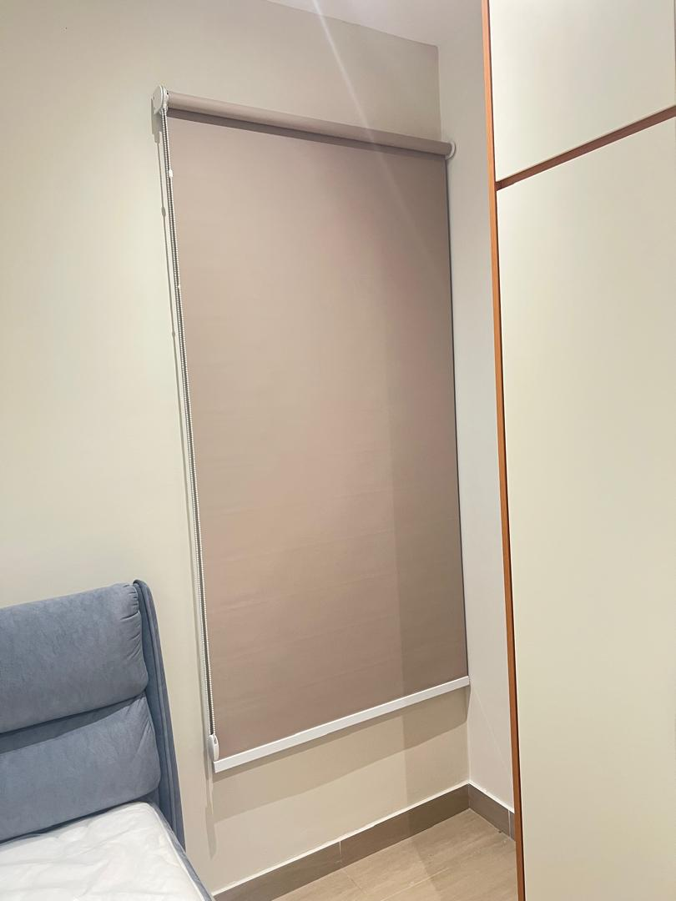
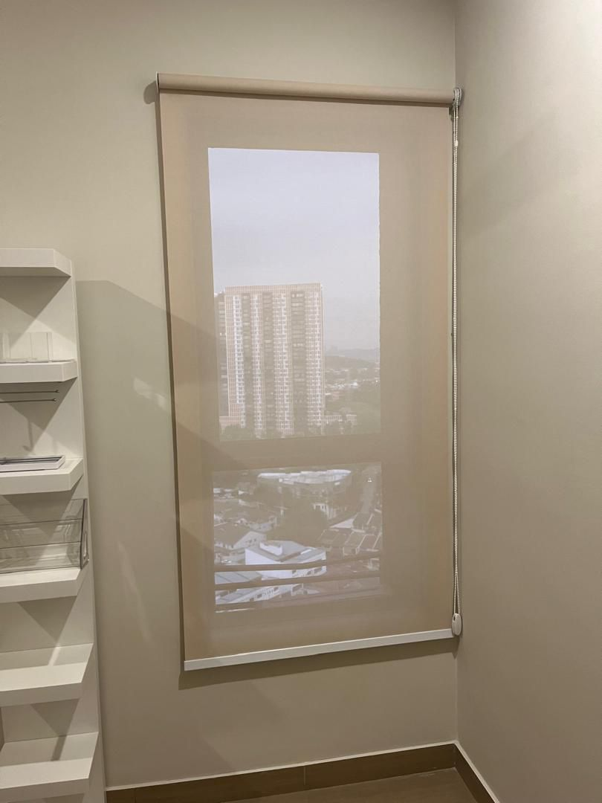

Custom Made Curtains
Made-to-measure curtains designed around your windows, room height and interior style.
Get Free Quote →Looking for a curtain seller, custom made curtain supplier or blinds seller? SK Curtain KL provides made-to-measure curtains, S-Fold wave curtains, 80–90% blackout curtains, sunscreen roller blinds and zebra blinds with free on-site measurement, quotation and professional installation.
Made-to-measure window treatments for condominiums, apartments, new homes and offices throughout Kuala Lumpur, Petaling Jaya and Klang Valley.
SK Curtain KL provides custom made curtains and blinds for customers looking for a reliable curtain seller or blind seller in KL and nearby areas. We bring fabric samples, measure your windows and provide a quotation before you decide.
Our products include custom curtains, S-Fold wave curtains, sheer curtains, 80–90% blackout curtains, sunscreen roller blinds and zebra blinds. Professional curtain track and blind installation is also available.
We serve Dwitara Residences and surrounding PJ South areas as well as Petaling Jaya, Puchong, Bukit Jalil, Bukit Bintang, Sunway, Subang Jaya, Old Klang Road, Cheras, Ampang and nearby Klang Valley locations.
Choose the window treatment that suits your room, sunlight, privacy and interior style.
Made-to-measure curtains designed around your windows, room height and interior style.
Get Free Quote →
Modern wave curtains for living rooms, bedrooms and high-rise condominium interiors.
Get Free Quote →
Blackout fabric options providing approximately 80–90% light blockage, depending on fabric selection and installation conditions.
Ask For Price →
Reduce glare and filter daylight while maintaining useful outside visibility during the day.
Ask For Price →
A modern dual-layer blind option for flexible daylight and privacy control.
Ask For Price →
Curtain track fitting, blind mounting and professional installation after measurement and order confirmation.
Book Measurement →Premium S-Fold blackout curtains installed for optimal light control, privacy and modern interior elegance.


Custom window treatments for Dwitara Residences, Surya PJ South, Petaling Jaya.
Moving into Dwitara Residences? SK Curtain KL provides custom made curtains and blinds for residents with free on-site measurement, fabric samples and quotation.
Popular options include S-Fold wave curtains, sheer curtains, 80–90% blackout curtains, sunscreen roller blinds and zebra blinds. We recommend options based on your window size, sunlight, privacy and room requirements.
Our curtain and blind installation service also covers surrounding PJ South, Sunway, Puchong, Bukit Jalil, Kuala Lumpur and other nearby Klang Valley areas.
Curtain and blind measurement and installation across Kuala Lumpur, Petaling Jaya and surrounding Klang Valley.
Searching for a curtain shop, curtain seller, custom curtain supplier or blinds seller near you? Contact SK Curtain KL for free measurement and quotation.
Simple process from WhatsApp enquiry to professional installation.
Yes. SK Curtain KL provides custom made curtains and blinds for Dwitara Residences, Surya PJ South, Petaling Jaya.
Yes. We provide made-to-measure curtains and professional installation across Kuala Lumpur, Petaling Jaya and nearby Klang Valley areas.
Our blackout fabric options provide approximately 80–90% light blockage depending on the selected fabric and installation conditions.
We provide sunscreen roller blinds, zebra blinds and blackout blind options depending on your requirements.
Yes. Free on-site measurement and quotation are available within our service areas.
We serve Kuala Lumpur, Petaling Jaya, Puchong, Bukit Jalil, Bukit Bintang, Sunway, Subang Jaya, Old Klang Road, Cheras, Ampang and nearby Klang Valley areas.
Send us your location and requirements. Book a free on-site measurement and quotation for custom curtains or blinds.
WhatsApp SK Curtain KL